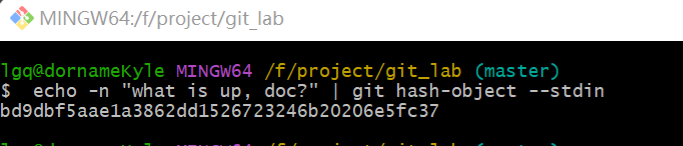

Git对象及其存储结构
Git对象
Git是一个内容寻址文件系统。其核心思想就是键值对数据库（key-value data store），其核心行为包括：
- 通过向 Git 仓库中插入任意类型的内容，它会返回一个唯一的键（key）。
- 通过该键可以在任意时刻再次取回该内容。
实验出真知
可以通过底层命令 git hash-object 来演示上述效果——该命令可将任意数据保存于 .git/objects 目录（即 对象数据库），并返回指向该数据对象的唯一的键。
-
初始化一个Git仓库
$ git init git_lab -
检查一下git对象目录(
.git/objects)生成了哪些文件夹，通过find命令查看所有文件夹（包含子文件夹）$ find .git/objects/ .git/objects/ .git/objects/info .git/objects/pack -
检查一下
.git/objects目录下生成了哪些文件，同样通过find+文件路径+类型参数-type f查看所有文件$ find .git/objects/ -type f //无输出表示没有文件 -
接下来要开始创建并保存一个文件了，这里简单创建一个文本文件
echo "git testing" > git_test.txt -
保存到git对象目录（
.git/objects）。这里使用了git hash-object命令，根据文件git_test.txt的内容生成一串hash值git hash-object -w git_test.txt 34e75148c0aeb4efb212f817606d386b15190525注意：hash值仅与文件内容有关，与名称无关。
$ echo "git testing" | git hash-object -w --stdin 34e75148c0aeb4efb212f817606d386b15190525 -
再次查看git对象目录（
.git/objects）下的所有文件$ find .git/objects/ -type f .git/objects/34/e75148c0aeb4efb212f817606d386b15190525其中
hash值长度40，前两个字符用于子目录命名，后38个字符用于文件命名。hash算法参考SHA-1 -
文件
git_test.txt内容已经存储到对象数据库中，如果需要从git中取回数据，则需要通过cat-file命令实现（个人理解cat实际就是catch的缩写），其中指定-p选项可指示该命令自动判断内容的类型，并为我们显示大致的内容$ git cat-file -p 34e75148c0aeb4efb212f817606d386b15190525 git testing -
版本变更实验：更新文件
git_test.txt的内容并重新保存$ echo "changing" > git_test.txt $ git hash-object -w git_test.txt 372991728e3348b2c32b8dd5377885f2f77173ff -
查看对象数据库生成文件内容，它记录了该文件的两个不同版本。
$ find .git/objects/ -type f .git/objects/34/e75148c0aeb4efb212f817606d386b15190525 .git/objects/37/2991728e3348b2c32b8dd5377885f2f77173ff -
删除
git_test.txt文件，然后尝试回归到第一个版本$ rm git_test.txt $ git cat-file -p 34e75148c0aeb4efb212f817606d386b15190525 > git_test.txt
这里面其实有个问题：记住文件的每一个版本所对应的 SHA-1 值并不现实；另一个问题是，在这个（简单的版本控制）系统中，文件名并没有被保存——我们仅保存了文件的内容。
上述类型的对象我们称之为 数据对象（blob object）。 利用 git cat-file -t 命令，可以让 Git 告诉我们其内部存储的任何对象类型，只要给定该对象的 SHA-1 值：
$ git cat-file -t 372991728e3348b2c32b8dd5377885f2f77173ff
blob
树对象
为了记住每个文件的文件名，GIt引入了树对象
树对象的目标：解决文件名保存的问题。
下面主要介绍如何创建一个树对象 ：
创建一个树对象。创建一个树对象首先需要通过暂存一些文件来创建一个暂存区。 可以通过底层命令 git update-index 为一个单独文件 text.txt 文件的指定版本创建一个暂存区，其中必须指定--add选项。而--cacheinfo选项，则是当添加的文件来源于Git数据库中时需要指定的选项。
git update-index --add --cacheinfo 100644 \{文件对象hash} 文件名称
git update-index --add --cacheinfo 100644 \34e75148c0aeb4efb212f817606d386b15190525 git_test.txt
写入暂存区之后，可以通过write-tree命令将暂存区内容写入一个树对象。
git write-tree
e6de8239772c2c63585dd11b283050631b7f3801
注意：若是要将树对象写入暂存区则需要通过read-tree指令。通常用于将现有的特定树对象，加入到即将生成的新树对象中。
检查当前对象的类型。
git cat-file -t
git cat-file -t e6de8239772c2c63585dd11b283050631b7f3801
tree
查看树对象的信息
git cat-file -p e6de8239772c2c63585dd11b283050631b7f3801
100644 blob 34e75148c0aeb4efb212f817606d386b15190525 git_test.txt
综上数据对象维护了文件的内容、树对象维护了文件名称（包含文件名称和文件内容的关系），从使用者的角度来说，我们不仅关心每一次提交的文件内容和文件名称同时我们还关心提交人、提交时间以及提交原因，即我们业务常说的维护人信息为了保存维护人信息，Git又引入了提交对象。
提交对象
提交对象的职责是管理和记录维护人信息，通过指令commit-tree来创建。
通过commit-tree指令，我们为一个树对象(tree object)创建一个提交对象。
git commit-tree e6de82 -m "first commit"
9a0035e9c8b72429ee2b78b7d4a5d4baaa7a0a53
git log 9a0035
commit 9a0035e9c8b72429ee2b78b7d4a5d4baaa7a0a53
Author: LiGuangQiao <lgqfighting@163.com>
Date: Sat Sep 16 11:58:11 2023 +0800
first commit
实际上每次我们运行 git add 和 git commit 命令时，Git 所做的工作实质就是将被改写的文件保存为数据对象，更新暂存区，记录树对象，最后创建一个指明了顶层树对象和父提交的提交对象。 这三种主要的 Git 对象——数据对象、树对象、提交对象——最初均以单独文件的形式保存在 .git/objects 目录下。
对象存储结构
Git对象具备自己的存储策略，元数据结构如下：
#{对象类型} #{content.len}\0#{content}
注意：\0表示空字符，代表字符串的结束标记，content 是字节序列不是字符串，故len也是指序列的长度不是对应字符串的长度，通常可能没有影响，但当你去求树对象的hash或者解压缩树对象内容时，就会明白其中的不同，尤其使用rust去实现时。
例如：
"blob 16\u0000what is up, doc?"
元数据整体由头部信息和存储信息两部分组成，头部信息为对象类型和存储信息长度，最后添加上存储信息的内容。元数据类型为字符串。Git将头部信息的存储信息拼接起来后使用SHA-1计算一个hash值。
例子中的计算结果为
"bd9dbf5aae1a3862dd1526723246b20206e5fc37"
注意：hash的长度为定长40个字符。
可使用git hash-object命令来做尝试。
注意：请在git的自带工具中使用目前在VSCODE的命令行执行得到的结果是不一样的。具体什么原因还有待研究。
echo -n "what is up, doc?" | git hash-object --stdin
"bd9dbf5aae1a3862dd1526723246b20206e5fc37"

上述内容只m是对存储内容转换成一个定长Hash，实际存储到磁盘上仍有后续处理包含压缩处理和分割存储处理。
-
压缩处理：目标是为了尽可能节省存储空间。Git选择的压缩库为
zlib。上述例子的压缩结果为"x\x9CK\xCA\xC9OR04c(\xCFH,Q\xC8,V(-\xD0QH\xC9O\xB6\a\x00_\x1C\a\x9D" -
分割存储处理：Git将存储内容写入磁盘的路径，是对hash值进行了分割，以前两个字符为子目录名称，后38个字符作为子目录内容的文件名称。目测是为了保证磁盘写入性能，由于没有做测试所以尚不清楚。
".git/objects/bd/9dbf5aae1a3862dd1526723246b20206e5fc37"
树对象的存储结构
基础对象个是如上述树对象的结构为：
tree #{content.lenght}\0#{content}
树对象的content有进一步的存储结构：
//#{content}
//mode 40000代表树对象 100644代表blob对象
#{mode} #{dir1_name or file1_name}#{dir1 or file1's hash}#{mode} #{dir2_name or file2_name}#{dir2 or file2's hash}...
提交对象的存储结构
commit #{content.lenght}\0#{mode} #{obj_hash}\nauthor #{用户名称} <#{email}> #{时间戳} #{时区信息}\ncommitter #{用户名称} <#{email}> #{时间戳} #{时区信息}\n\n#{提交信息}\n
注意：\0代表空字符 \n代表换行符
Git存储对象实验（Rust）
实验目标旨在理解GIt存储对象的存储策略。
构建Git对象存储内容并计算hash
-
定义存储对象的数据结构。
由上述章节内容归纳，要定义一个结构体，要求可以描述Blob对象、Tree对象和Commit对象存储内容至少需要以下要素信息：存储内容、对象模式、对象类型和子对象集以及文件名称。
**注意:**生产环境中不同对象还是分别创建对应的结构体，此处只做实验帮助理解，不考虑程序冗余。
字段编码 字段名称 字段类型 说明 content 存储内容 Vec git对象的存储内容 mode 对象模式 String git的对象模式100644代表blob对象模式、040000代表tree对象模式 data_type 对象类型 String blob、tree、commit nodes 子对象集合 Vec tree、commit 的关联对象 file_name 文件名称 String 文件名成blob使用 msg 提交信息 String commit 对象使用 #[derive(Clone)] struct Data { content: Vec<u8>, mode: String, data_type: String, nodes:Option<Vec<Data>>, file_name:String } impl Data{ //获取blob对象的存储内容 fn get_data(&self) -> String { format!( "{} {}\x00{}", self.data_type, self.content.len(), self.content.as_bstr() ) } fn add_node(&mut self,subnode:Data){ if let Some(x) = &mut self.nodes{ x.push(subnode); }else{ self.nodes = Some(vec![subnode]); } } //获取blob对象在树对象中的存储内容 fn get_tree_data(&self) -> Vec<u8> { let hash = encode::get_sha_1(self.get_data()); println!("{}:\n",hash); let mode = self.mode.as_bytes().to_vec(); let queue = hex::decode(hash).expect("Invalid hex string"); let file_name = self.file_name.as_bytes().to_vec(); let nil = "\x00".as_bytes().to_vec(); let space = " ".as_bytes().to_vec(); [mode,space,file_name,nil,queue].concat() } } -
为结构体实现对象的初始化方法。
blob对象初始化方法fn new_blob(content: Vec<u8>, mode: String, data_type: String,file_name:String) -> Self { Data { content: content, mode: mode, data_type: data_type, nodes:None, file_name:file_name, msg:None } }单元测试：
生成测试用例: 文件:test.txt 文件内容:what is up, doc? hash:bd9dbf5aae1a3862dd1526723246b20206e5fc37#[test] fn test_blob(){ let blob_1 = Data::new_blob("what is up, doc?".as_bytes().to_vec(),"100644".to_string(),"blob".to_string(),"test.txt".to_string()); assert_eq!(encode::sha_1(blob_1.content.as_bstr())); }tree对象初始化方法fn new_tree(mode: String, data_type: String,nodes:Vec<Data>)->Self{ let copy_nodes = nodes.clone(); let byte_type = data_type.as_bytes().to_vec(); let space = " ".to_string().as_bytes().to_vec(); let nil = b"\x00".to_vec(); let mut v:Vec<Vec<u8>> = vec![byte_type,space,nil]; let mut len = 0; for node in nodes{ let mut data = node.get_tree_data(); len += data.len(); v.push(data); } let len = len.to_string().as_bytes().to_vec(); v.insert(2, len); Data { mode:mode, data_type:data_type, nodes:Some(copy_nodes), file_name:" ".to_string(), //树对象不需要，以空字符串占位避免报错 content:v.concat(), msg:None } }单元测试：
生成测试用例: 文件:demo.txt 内容:test hash:30d74d258442c7c65512eafab474568dd706c430 文件:test.txt 内容:what is up, doc? hash:bd9dbf5aae1a3862dd1526723246b20206e5fc37 树对象:dcc20f823c15ba6394596b475c03d08cdc4417a0 解析后的树对象内容: tree 72\0100644 demo.txt\00\xD7M%\x84B\xC7\xC6U\x12\xEA\xFA\xB4tV\x8D\xD7\x06\xC40100644 test.txt\0\xBD\x9D\xBFZ\xAE\x1A8b\xDD\x15&r2F\xB2\x02\x06\xE5\xFC7"#[test] fn new_tree_test() { let blob_1 = Data::new_blob( "what is up, doc?".as_bytes().to_vec(), "100644".to_string(), "blob".to_string(), "test.txt".to_string(), ); let blob_2 = Data::new_blob( "test".as_bytes().to_vec(), "100644".to_string(), "blob".to_string(), "demo.txt".to_string(), ); let tree = Data::new_tree( "40000".to_string(), "tree".to_string(), vec![blob_2, blob_1], ); assert_eq!( encode::sha_1(tree.content), "dcc20f823c15ba6394596b475c03d08cdc4417a0".to_string() ); }commit对象初始化fn new_commit(msg: String, node: Data) -> Self { //commit let byte_type = "commit".as_bytes().to_vec(); let space = " ".as_bytes().to_vec(); let nil = "\x00".as_bytes().to_vec(); let next_line = "\n".as_bytes().to_vec(); let author = "author".as_bytes().to_vec(); let author_val = "dorname".as_bytes().to_vec(); let email_val = "<lgqfighting@163.com>".as_bytes().to_vec(); let now = SystemTime::now(); // let timestamp = now.duration_since(UNIX_EPOCH).unwrap().as_secs(); let timestamp = "1699193914"; let timezone_offset = "+0800"; let node_copy = node.clone(); let formatted_timestamp = format!("{} {}", timestamp, timezone_offset) .as_bytes() .to_vec(); let commiter = "committer".as_bytes().to_vec(); let node_byte_type = node.data_type.as_bytes().to_vec(); let node_hash = encode::sha_1(node.content).as_bytes().to_vec(); let message = msg.clone().as_bytes().to_vec(); let mut v = vec![ node_byte_type, space.clone(), node_hash, next_line.clone(), author, space.clone(), author_val.clone(), space.clone(), email_val.clone(), space.clone(), formatted_timestamp.clone(), next_line.clone(), commiter, space.clone(), author_val, space.clone(), email_val, space.clone(), formatted_timestamp.clone(), next_line.clone(), next_line.clone(), message, next_line, ]; // let v = vec![byte_type,space,] let len = v.clone().concat().len().to_string().as_bytes().to_vec(); v.insert(0, byte_type); v.insert(1, space); v.insert(2, len); v.insert(3, nil); let content = v.concat(); Data { content: content, mode: "".to_string(), data_type: "commit".to_string(), nodes: Some(vec![node_copy]), file_name: "".to_string(), msg: Some(msg), } }测试用例: 提交对象 ff11bc76cb7e488b83369a169e255fb4ca2ee328 解压后的存储内容为 "commit 171\x00tree dcc20f823c15ba6394596b475c03d08cdc4417a0\nauthor dorname <lgqfighting@163.com> 1699193914 +0800\ncommitter dorname <lgqfighting@163.com> 1699193914 +0800\n\nfirst commit\n"#[test] fn commit_test() { let blob_1 = Data::new_blob( "what is up, doc?".as_bytes().to_vec(), "100644".to_string(), "blob".to_string(), "test.txt".to_string(), ); let blob_2 = Data::new_blob( "test".as_bytes().to_vec(), "100644".to_string(), "blob".to_string(), "demo.txt".to_string(), ); let tree = Data::new_tree( "40000".to_string(), "tree".to_string(), vec![blob_2, blob_1], ); let commit = Data::new_commit("first commit".to_string(), tree); assert_eq!( encode::sha_1(commit.content), "ff11bc76cb7e488b83369a169e255fb4ca2ee328".to_string() ); }
读取Git对象存储内容
准备测试用例
文件:demo.txt 内容:test hash:30d74d258442c7c65512eafab474568dd706c430
文件:test.txt 内容:what is up, doc? hash:bd9dbf5aae1a3862dd1526723246b20206e5fc37
对应blob对象文件地址
.git/objects/30/d74d258442c7c65512eafab474568dd706c430
.git/objects/bd/9dbf5aae1a3862dd1526723246b20206e5fc37
对应tree对象文件地址
.git/objects/dc/c20f823c15ba6394596b475c03d08cdc4417a0
对应commit对象地址
.git/objects/ff/11bc76cb7e488b83369a169e255fb4ca2ee328
存储内容解压方法:树对象的解压是比较坑的因为hash值必须得二次解析,blob和commit对象可以使用同样的方法解
pub fn decode_reader(bytes: &[u8]) -> io::Result<String> {
let mut z = ZlibDecoder::new(bytes);
let mut s = String::new();
z.read_to_string(&mut s)?;
Ok(s)
}
pub fn decode_tree(bytes: &[u8]) -> io::Result<String> {
let mut z = ZlibDecoder::new(bytes);
let mut vector = Vec::<u8>::new();
z.read_to_end(&mut vector)?;
let type_data_index = vector.find_byte(0x00).unwrap();
let mut obj_data_arr: Vec<u8> = vector.drain(type_data_index + 1..).collect();
let mut type_data = vector.as_bstr().to_string();
type_data+="\n";
while let Some(index) = obj_data_arr.find_byte(0x00) {
type_data+=&format!("子对象：{} ",&obj_data_arr[..index].as_bstr());
type_data+=&format!("Hash: {}\n",hex::encode(&obj_data_arr[index + 1..index + 21]));
obj_data_arr.drain(..index + 21);
}
Ok(type_data)
}
单元测试
#[test]
fn blob_test(){
use std::fs;
use std::fs::File;
let tree_object_file: Vec<u8> =
fs::read("/project/git_lab/src/testfile/30/d74d258442c7c65512eafab474568dd706c430")
.expect("文件读取成功");
let content_byte = decode_reader(&tree_object_file[..]).unwrap();
println!("{}", content_byte);
}
//blob 4test
#[test]
fn tree_test() {
use std::fs;
use std::fs::File;
let tree_object_file: Vec<u8> =
fs::read("/project/git_lab/src/testfile/dc/c20f823c15ba6394596b475c03d08cdc4417a0")
.expect("文件读取成功");
let content_byte = decode_tree(&tree_object_file[..]).unwrap();
println!("{}", content_byte);
}
//output
//tree 72
//子对象：100644 demo.txt Hash: 30d74d258442c7c65512eafab474568dd706c430
//子对象：100644 test.txt Hash: bd9dbf5aae1a3862dd1526723246b20206e5fc37
#[test]
fn commit_test(){
use std::fs;
use std::fs::File;
let tree_object_file: Vec<u8> =
fs::read("/project/git_lab/src/testfile/ff/11bc76cb7e488b83369a169e255fb4ca2ee328")
.expect("文件读取成功");
let content_byte = decode_reader(&tree_object_file[..]).unwrap();
println!("{}", content_byte);
}
//commit 171tree dcc20f823c15ba6394596b475c03d08cdc4417a0
//author dorname <lgqfighting@163.com> 1699193914 +0800
//committer dorname <lgqfighting@163.com> 1699193914 +0800